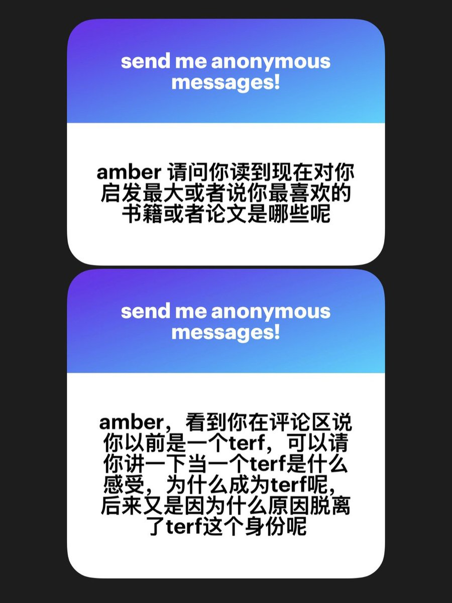
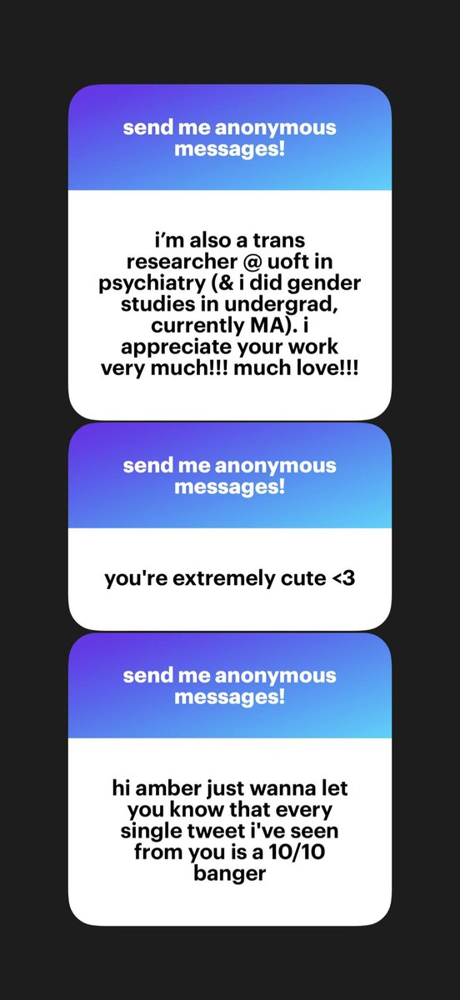

① 纯粹理性批判, 去政治化的政治, on liking women, a short history of trans misogyny
② 我小时候受到了严重的重男轻女教育，这给我造成了巨大的痛苦并且严重摧毁了我的性格，导致我一直对这样的体制有强烈的恨意。初中时期我为了将自己从性别刻板印象中拯救出来并理解自身的女装爱好，学到了李银河式的无跨儿版的酷儿女权，高中又自行阅读和翻译了Andrea Dworkin的部分作品，她那充满愤怒恨意和自信的写作方式让我非常震撼和沉迷。在这段时期，我基本固化了跨性别就是在生产刻板印象的认知，并且因为听说药娘圈子很乱所以完全没有考虑HRT。20年之后我开始女装出门，性别焦虑变得更加严重，同时目睹到了所谓酷儿女权的反跨行径（王小嗨事件）和网络激女的兴起，对国内的顺性别女权主义者完全丧失了信任，并在23年写作本科毕业论文的过程中学习了跨性别女权主义的基本信条和分析方式，最终成功脱离了TERF的话语体系。
③④⑤ thank u all
② 我小时候受到了严重的重男轻女教育，这给我造成了巨大的痛苦并且严重摧毁了我的性格，导致我一直对这样的体制有强烈的恨意。初中时期我为了将自己从性别刻板印象中拯救出来并理解自身的女装爱好，学到了李银河式的无跨儿版的酷儿女权，高中又自行阅读和翻译了Andrea Dworkin的部分作品，她那充满愤怒恨意和自信的写作方式让我非常震撼和沉迷。在这段时期，我基本固化了跨性别就是在生产刻板印象的认知，并且因为听说药娘圈子很乱所以完全没有考虑HRT。20年之后我开始女装出门，性别焦虑变得更加严重，同时目睹到了所谓酷儿女权的反跨行径（王小嗨事件）和网络激女的兴起，对国内的顺性别女权主义者完全丧失了信任，并在23年写作本科毕业论文的过程中学习了跨性别女权主义的基本信条和分析方式，最终成功脱离了TERF的话语体系。
③④⑤ thank u all

